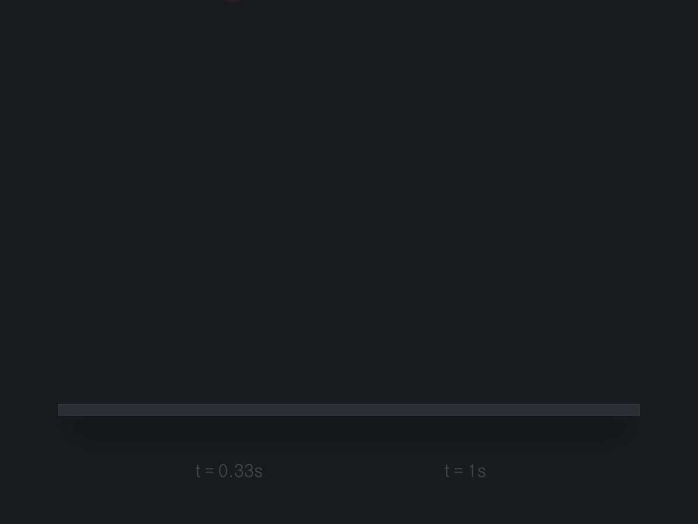
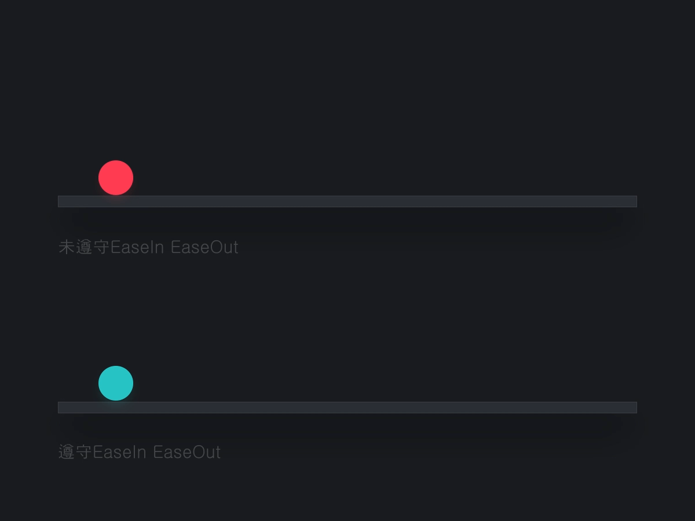
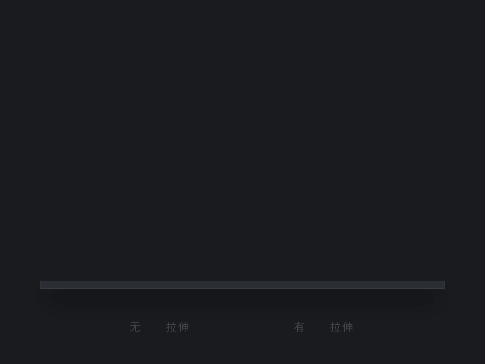

动效设计的八大要素
时间间距
控制动画节奏的；时间上的长短体现在动效上就是快和慢的区别；做动效大部分的时间都是在调整时间和间距。

缓入缓出
稍微有点前端知识的同学都知道EaseIn EaseOut;这个要素也是很重要的；情感传递模拟现实都需要用到这个要素；看个实例;

直观感受它，就是一个匀速和不匀速的区别；红球是匀速的，绿球是不匀速的（先快后慢）；在此引入牛顿定律；自然界中没有任何物体，可以在不受外力的情况下保持匀速直线运动。可见绿球在现实中要真实些；自然界当中的一切物体都会有惯性，会超过所要停的时刻值，然后再返回来所要停的这个值之前，在此类推做摇摆运动，最终因为自然界的摩擦力停止。
预备动作
想象一个场景，平时扔铅球；在开始（扔球时）前都要做一系列预备动作；
规律：物体运动之前，都会积攒势能，在释放出去。而这个积攒势能的过程就是预备动作，预备动作可以给出物体下一步要干什么。下一步运动快的话，积攒的势能就多，预备动作时间会长，间距就会大，反之亦然。
动作跟随
当两个或多个物体链接在一起的时候就会出现动作跟随和重叠动作。
A:主对象移动或者转动时，子对象也会跟随主对象做相同的动作【主对象向左，子对象也会向左】
B：主对象下每个子对象都会比前一对象迟几帧（具体操作看动效）
挤压和拉升
生活中的物体在运动的时候，都会有不同程度的挤压和拉升，只不过物体材质和密度的不同；
在挤压和拉升中必须要遵守一个原则，它的体积必须保持统一，例如：直径100的圆形，
他的体积是10000，Y抽拉升为200；那么X抽就是10000/200；同理，X轴的拉升也是一样的；总之一个原则，体积保持不变，它的一个优点就是可以变相增加物体的运动速度。能看出这个物体是什么样的材质，是有弹性的，还是硬度强的。

待续
AE做动效的常用快捷键整理：
- Shift+ctrl+方向键 移动10帧
- 开始位置/结束位置:B/N
- 窗口最大化:~
- 上一个关键帧:J
- 下一个关键帧:K
- 移动一帧关键帧：Mac:option+左右方向键 Win:Alt+左右方向键
- 透明度(Opacity):T
- 缩放(Scale):S
- 打开/关闭关键帧:U
- 取消缓入缓出 Mac:command+鼠标左键 Win:Ctrl+鼠标左键
- 隐藏所有辅助对象 Mac:command+Shift+H Win:Ctrl+Shift+H
- 效果控件窗口切换 Mac:command+0 Win:Ctrl+0
- 复制图层 Mac:command+D Win:Ctrl+D
- 旋转(Rotation):R